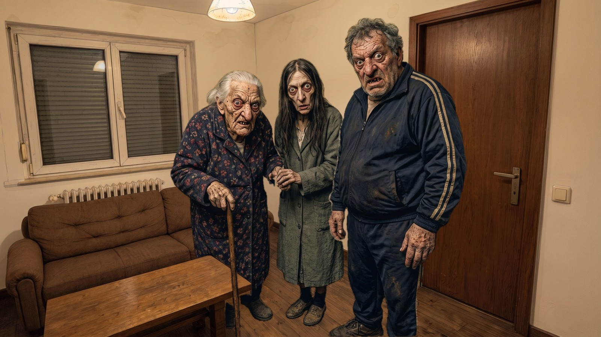

Medico della peste · filtro finale
Anteprima VHS animato
Il filtro VHS come si muoverebbe nel gioco, calcolato in tempo reale sul soggiorno nello stile definitivo: stanza con il 20% di fumetto ripulito e personaggi ammorbiditi. Passa dal giorno alla notte in verde e all'infrarosso, e abbassa l'intensità se l'effetto dà fastidio.

PLAY
OTT. 25 202623:47:00
- 100% corrisponde alle immagini che hai approvato; a 0% resta solo il colore della scena.
- A ogni fotogramma cambiano la grana e il tremolio delle righe; in fondo c'è il rumore della testina; ogni tanto l'immagine si strappa.
- Notte: l'immagine vira al verde con uno strappo, come un cambio di nastro. Infrarosso: vira al rosso tendente al rosa, più scuro e più tenue del verde.